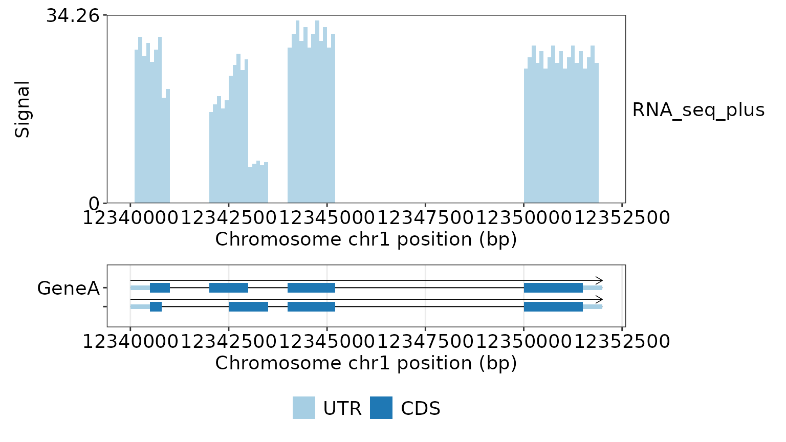
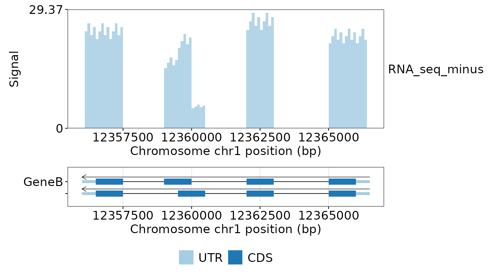
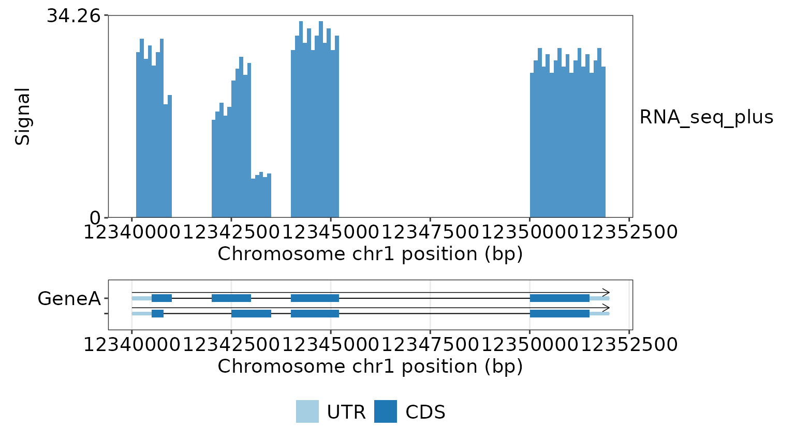
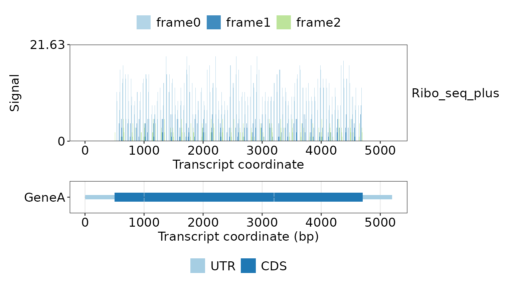
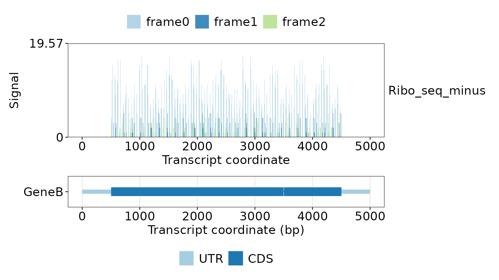
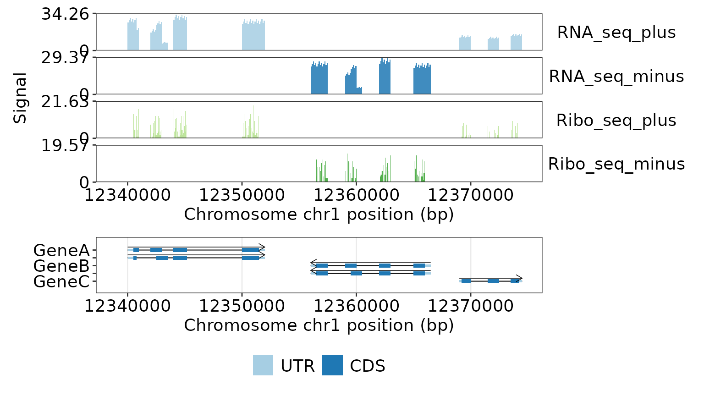
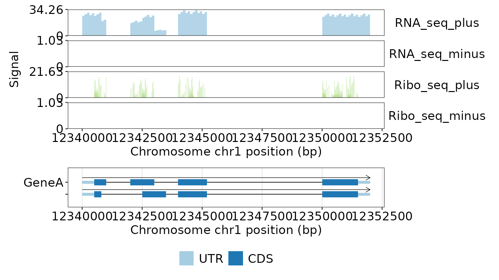

Strand-specific RNA-seq and Ribo-seq signal tracks
Rensc
Source:vignettes/signal-tracks.Rmd
signal-tracks.RmdThis vignette uses the deterministic GeneTrackR demo genome. RNA-seq and Ribo-seq signals are each represented by separate plus- and minus-strand bedGraph files.
Load annotation and signal files
library(GeneTrackR)
gp <- read_genepred(
system.file("extdata", "gtr_demo.genePredExt", package = "GeneTrackR"),
format = "genePredExt",
verbose = FALSE
)
rnaseq_files <- system.file(
"extdata",
c("gtr_demo_rnaseq_plus.bedgraph", "gtr_demo_rnaseq_minus.bedgraph"),
package = "GeneTrackR"
)
riboseq_files <- system.file(
"extdata",
c("gtr_demo_riboseq_plus.bedgraph", "gtr_demo_riboseq_minus.bedgraph"),
package = "GeneTrackR"
)bedGraph does not store strand metadata. The strand is therefore
supplied explicitly when constructing the BwgTrack
objects.
read_bwg() returns a BwgTrack. The signal
plotting functions used below return ggplot/patchwork figures directly;
they do not return a list with a $figure field.
merge_bwg() returns another BwgTrack, so the
merged object can be passed directly into any signal plotting
function.
rnaseq <- read_bwg(
rnaseq_files,
format = "bedgraph",
sample_names = c("RNA_seq_plus", "RNA_seq_minus"),
strand = c("+", "-"),
mode = "memory",
verbose = FALSE
)
riboseq <- read_bwg(
riboseq_files,
format = "bedgraph",
sample_names = c("Ribo_seq_plus", "Ribo_seq_minus"),
strand = c("+", "-"),
mode = "memory",
verbose = FALSE
)
rnaseq$samples[, c("sample_id", "strand"), with = FALSE]
#> sample_id strand
#> <char> <char>
#> 1: RNA_seq_plus +
#> 2: RNA_seq_minus -
riboseq$samples[, c("sample_id", "strand"), with = FALSE]
#> sample_id strand
#> <char> <char>
#> 1: Ribo_seq_plus +
#> 2: Ribo_seq_minus -RNA-seq: exon-enriched coverage
The RNA-seq demo tracks contain signal over exons, including UTRs.
Designed intronic and intergenic regions have no bedGraph records.
GeneA is on the plus strand and GeneB is on
the minus strand.
rnaseq_genea_figure <- plot_signal_gene(
signal = rnaseq,
annotation = gp,
gene_id = "GeneA",
plot_type = "bar",
signal_y_scale = "fixed"
)
rnaseq_genea_figure
rnaseq_geneb_figure <- plot_signal_gene(
signal = rnaseq,
annotation = gp,
gene_id = "GeneB",
plot_type = "bar",
signal_y_scale = "fixed"
)
rnaseq_geneb_figure
Palette direction and panel proportions
signal_palette_direction reverses the standard palette
order before discrete colors are assigned. The effect is visible even
when strand-aware retrieval leaves a single signal sample. Explicit
signal_colors remain unchanged because they are treated as
exact user mappings.
rnaseq_palette_figure <- plot_signal_gene(
signal = rnaseq,
annotation = gp,
gene_id = "GeneA",
plot_type = "bar",
signal_palette = "Blues",
signal_palette_direction = -1,
signal_y_scale = "fixed",
signal_track_height = 4,
gene_track_height = 1
)
rnaseq_palette_figure
The same height arguments are available in
plot_signal_transcript() and
plot_signal_region(). The integrated
plot_tracks() function already exposes a named
heights vector.
Ribo-seq: sparse base-resolution P-site counts
The Ribo-seq tracks contain moderately dense one-base integer P-site-like counts only in CDS regions. Frame 0 is broadly occupied with variable heights, while frame 1 and frame 2 use different codon subsets with lower irregular counts. Zero-count bases are omitted. Counts follow transcript orientation, are distributed at approximately 80%/10%/10% across frame 0/frame 1/frame 2, and initiation/termination frame-0 counts are approximately two times the internal frame-0 mean.
For the positive-strand TxA1 transcript:
riboseq_plus_figure <- plot_signal_transcript(
signal = riboseq,
annotation = gp,
transcript_id = "TxA1",
coordinate = "transcript",
plot_type = "frame"
)
riboseq_plus_figure
For the negative-strand TxB1 transcript:
riboseq_minus_figure <- plot_signal_transcript(
signal = riboseq,
annotation = gp,
transcript_id = "TxB1",
coordinate = "transcript",
plot_type = "frame"
)
riboseq_minus_figure
Combine all four signal tracks
RNA-seq and Ribo-seq objects have distinct sample IDs and can therefore be merged directly.
signal_all <- merge_bwg(rnaseq, riboseq)
summary_bwg(signal_all)
#> sample_id sum_signal mean_signal max_signal covered_bases
#> <char> <num> <num> <num> <int>
#> 1: RNA_seq_plus 632305.6 13.715957 33.264 46100
#> 2: RNA_seq_minus 361448.2 12.463731 28.512 29000
#> 3: Ribo_seq_plus 83318.0 4.124858 21.000 20199
#> 4: Ribo_seq_minus 45395.0 3.977133 19.000 11414A regional plot can display both assays and both strands over the GeneA-GeneB-GeneC locus.
regional_signal_figure <- plot_signal_region(
signal = signal_all,
annotation = gp,
chrom = "chr1",
start = 12339001,
end = 12374500,
strand = "both",
plot_type = "bar"
)
regional_signal_figure
The same BwgTrack can be passed directly to
plot_tracks(). Here it is combined with the GeneA
annotation track:
integrated_signal_figure <- plot_tracks(
annotation = gp,
signal = signal_all,
gene_id = "GeneA",
signal_type = "bar"
)
integrated_signal_figure